Episode 4: The Girls (and Boy) Who Leapt Through Time |
Translator's Notes |
|
The name of the Episode itself is a reference to the 2006 animated film, |
|
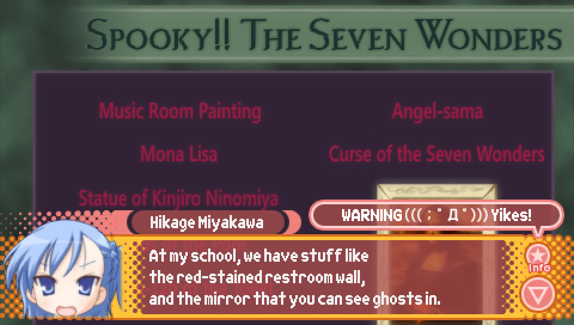 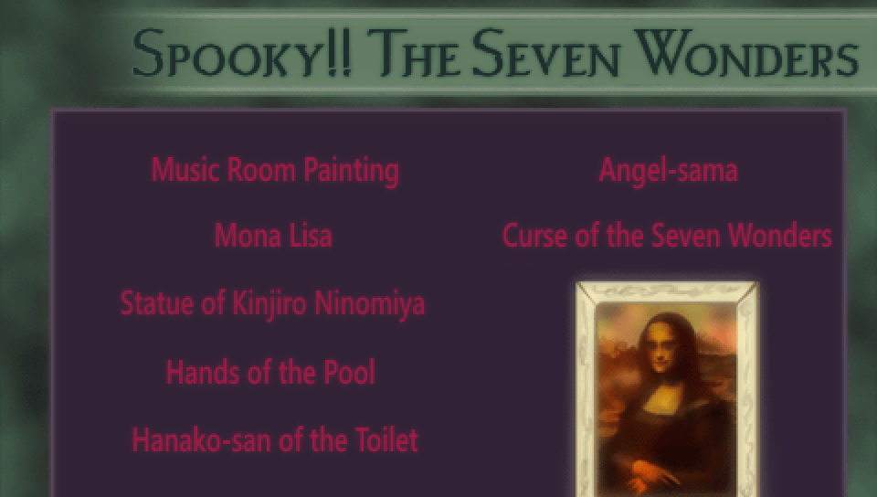
The Unlucky★Sisters segment the protagonist watches before leaving for the first day of school
However, there's a key difference between the Seven Wonders of the World and these more local Seven Wonders.
The wonders described by Hikage, as well as the wonders listed in the above CG, are some examples of these
Starting with Hikage's wonders, the "red-stained restroom wall" is possibly in reference to the story of "Aka Manto"
The Aka Manto will present people with an option to choose either red or blue toilet paper, and depending on which
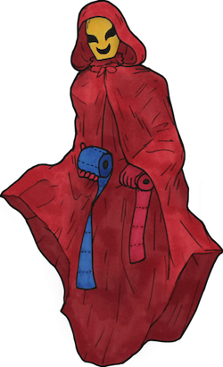
Next there is the "mirror that you can see ghosts in" that Hikage describes, 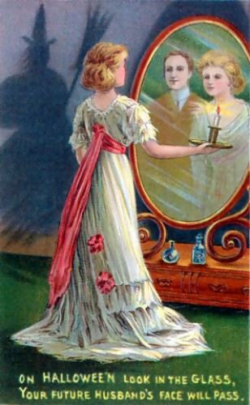
Now, on to the wonders listed in the CG. For "Music Room Painting", the kinds of paintings you may
Though not from the time period Lucky Star: Ryouou Gakuen Outousai was released in, one example of
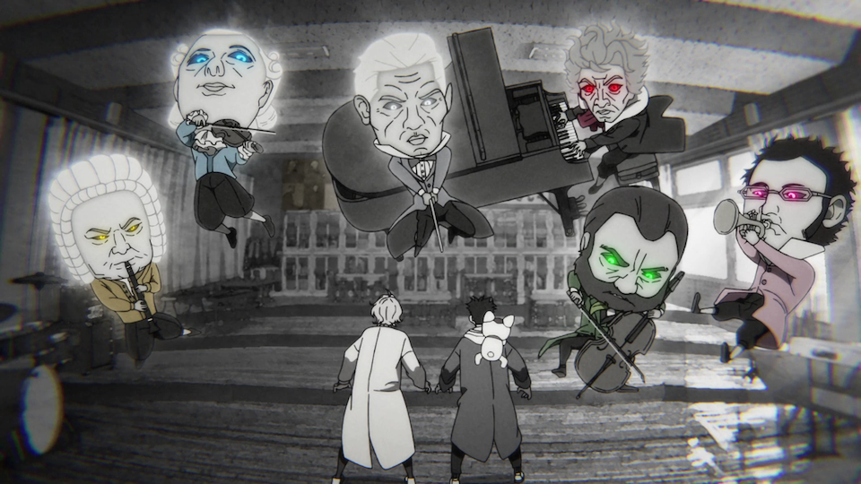
For "Mona Lisa", this is of course referring to the famous painting by Leonardo da Vinci.
For "Statue of Kinjiro Ninomiya", it is in reference to Japanese agriculturalist Kinjiro Ninomiya
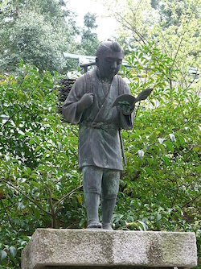
For "Hands of the Pool", I was unable to find any specific urban legends about this,
For "Hanako-san of the Toilet", this is arguably the most famous urban legend of the ones
As for "Angel-sama", this is in reference to a Japanese board game often played among school children,
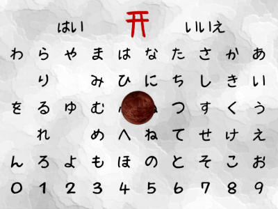
Lastly, for "The Curse of the Seven Wonders", I couldn't find anything in particular that this is referencing, |

|
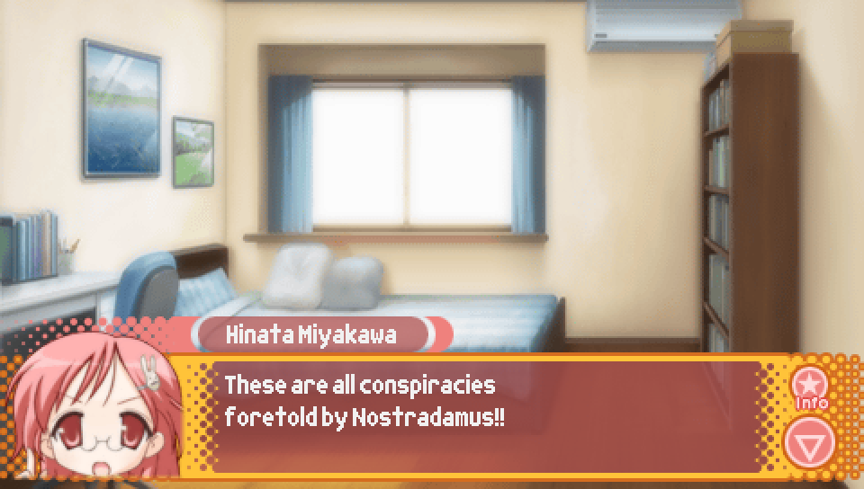 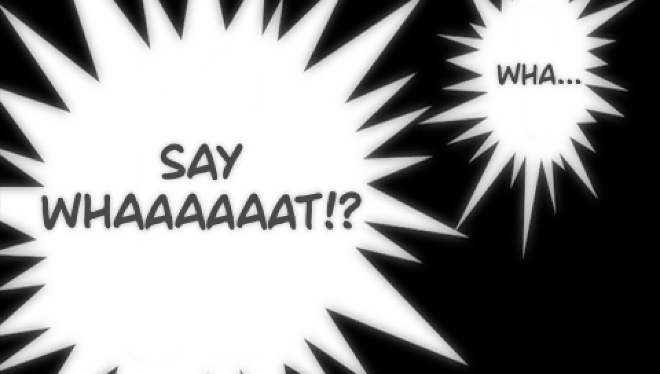
After watching the Unlucky★Sisters segment about it, if the protagonist concludes that his uneasiness
As discussed in the notes for Episode 2, this is a reference to the manga "MMR: Magazine Mystery Reportage"  |
|
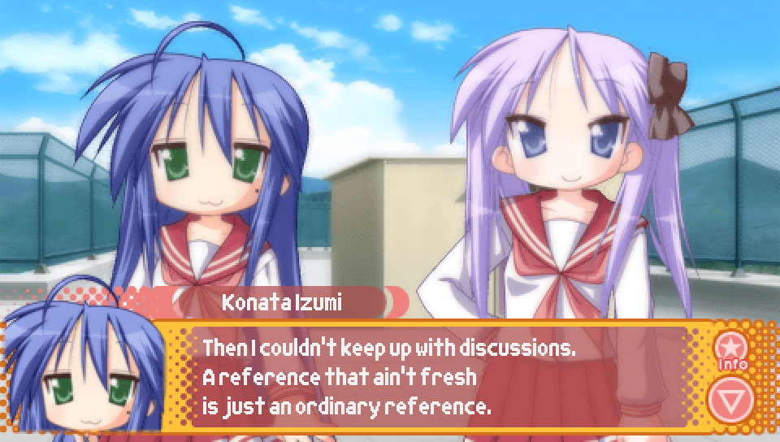
During lunch on the third day of Episode 0, during the discussion about potentially staying the night
The part about references that aren't fresh being just ordinary references is itself a reference
At one point during the film, after surviving being shot down by rival pilot, Donald Curtis,
However, this remark infuriates Gina, scolding Marco for continuing to be so reckless |
|
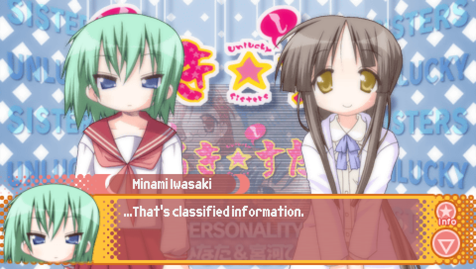
During the "Occ★ult" Unlucky★Sisters segment exclusive to the Episode 4 version of Episode 0,
This is a reference to the character "Mikuru Asahina" from "The Melancholy of Haruhi Suzumiya",
Additionally, Minami being the character chosen to say this is because her voice actress, 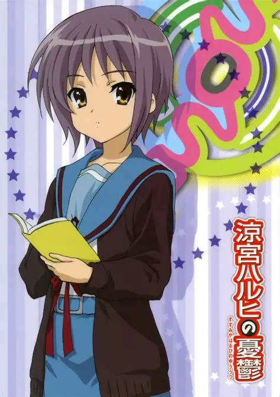 |